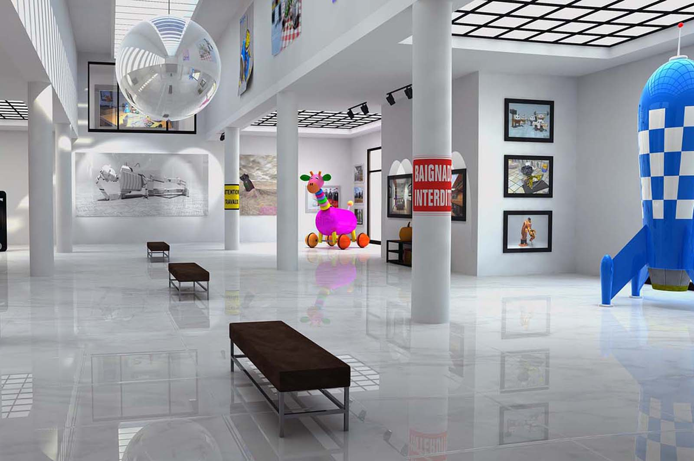
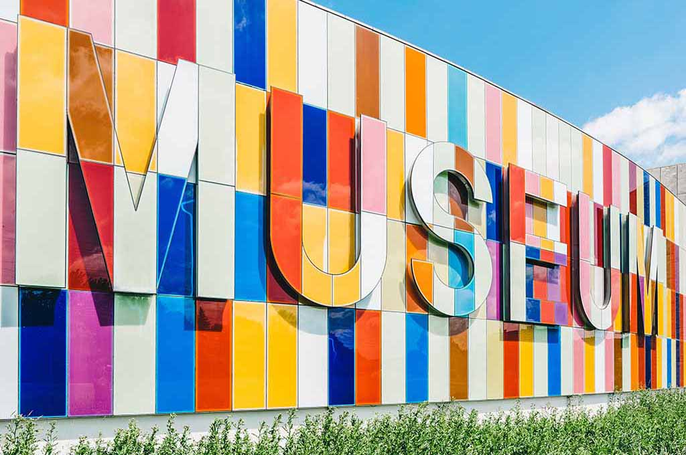

Explore together at Community Science Museum
Free entrance
Explore

For Kids
Are you a young person looking to learn more about science? Come on down to our museum, there’s plenty to see and do.
You can learn about Newtonian physics from our bumper swing, or why not travel back in time and meet our resident Woolly Mammoth? Our exhibits are designed to be accessible for interested minds, so make sure you come ready to learn and explore.
We also have the Young Stars club which meets once a week on a Saturday between 10:00 and 13:00 where you’ll get to explore and experiment with our team of experts.
During the school holidays we run special holiday clubs where you can join other children your age to go on a journey of discovery. Each holiday we pick a new theme to explore.
Message us for more informationFor teachers
As a community-driven museum, we want to work with schools to create places of learning and exploring.
Our team are on hand to give your students guided tours of the museum, teach them in our learning laboratory, and provide great video presentations that will excite and inspire them. Please get in touch with us to find out more about our facilities and to arrange a time to bring your students through for a visit.
Message us for more information
Researchers
Are you looking to get involved with our team of researchers and academics?
Our museum offers various ways for you to use our resources and contribute towards them. We have online records, laboratory space, and a working relationship with a number of universities around the country.
Message us for more informationExhibition Spaces

Read about the opportunities to explore and learn about Cosmology, Evolution, Biology and Medicine, Robotics and Al and Ecology here
Special Events and Exhibition
News! Read about the events here.
“Visiting Professor of Aeronautics”
“Night in the Museum”
“Energetica Exhibition on Loan”
Get involved
Do you want to support the museum, work as a volunteer or are you interested in a internship? Read about your opportunities here.
About us

We are committed to making science accessible to all. Read more about our aim here.
Visit us
Location
The museum is located at Osloveien 342.
Admission
The entrance is free for all.
There are guided tours of the museum that leave every hour. These tours are 70 NOK per person and include a handy printed guide of the museum.
If you would like to organise a guided tour for your group of 6 or more people, please contact us to arrange the tour.
Hours
Monday: Closed Tuesday: 10:00 – 16:00 Wednesday: 10:00 – 16:00 Thursday: 10:00 – 16:00 Friday: 10:00 – 19:00 Saturday: 9:00 – 16:00 Sunday: 9:00 – 13:00
Accessibility
The museum has wheelchair accessibility ramps. It also has audio guides and braille display signs for the visually impaired.
Food and drink
There is a café attached to the museum where you can get light lunches, soft drinks, coffee, snacks and more.
Shop
Our shop offers a range of memorabilia from the museum as well as great gifts and activity packs that allow you to continue to explore science even after you’ve left the museum.